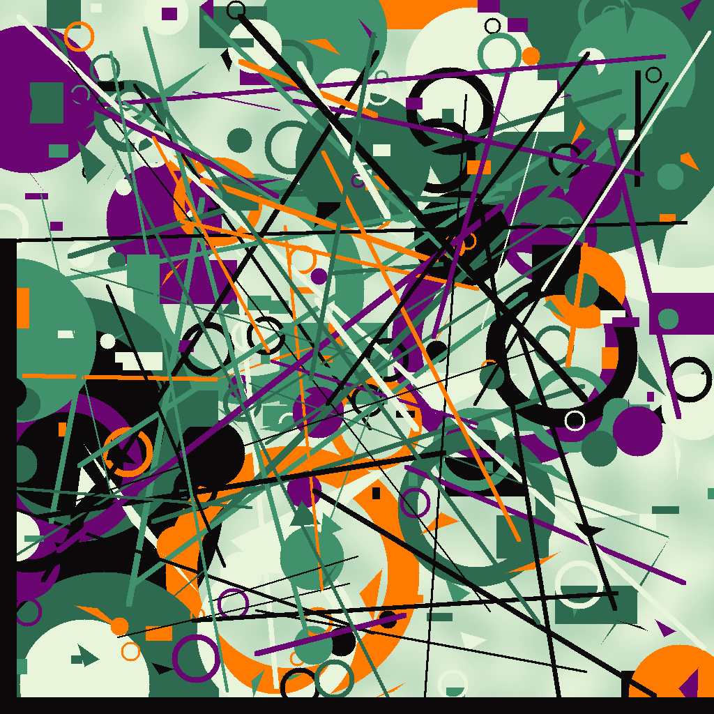

Imprima em tamanho real (100%), sem "ajustar à página", de preferência em papel fosco. Meça com uma régua: cada marcador deve ter 8,0 cm de lado e a régua ao lado do último, 5,0 cm. Se der diferente, corrija o Physical Size na PainelReferenceImageLibrary. Recorte pela linha tracejada e cole cada marcador plano, ao lado do seu componente. O nome fica fora do recorte e não vai para o painel.
